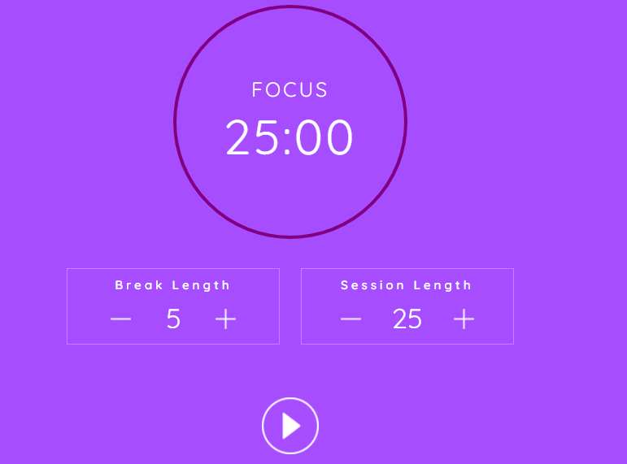
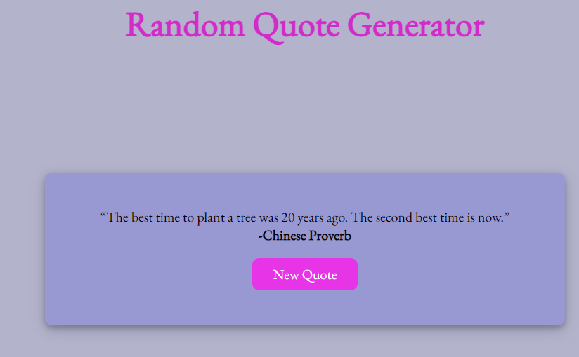
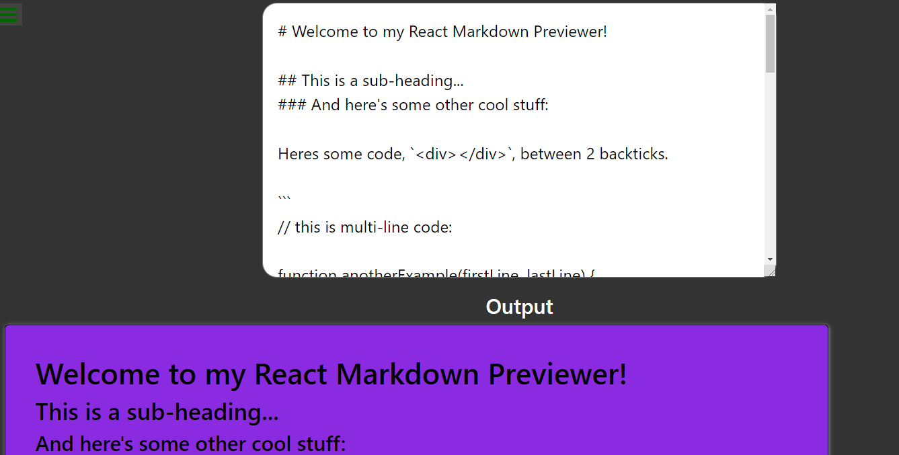
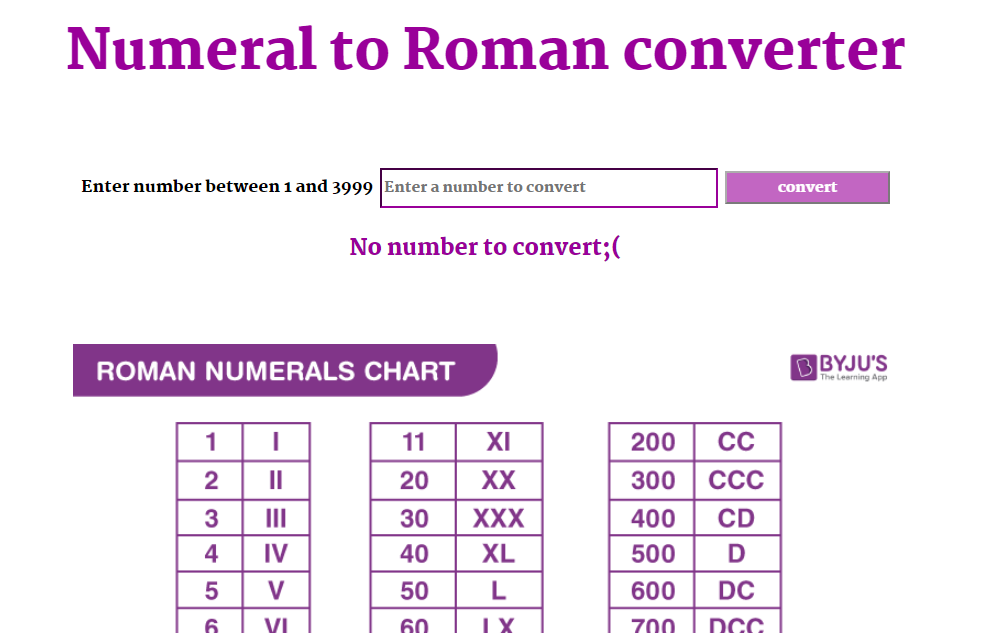

Iphigenie Marie Bera
I am a third year computer science student at Northwestern University with a minor in Data science and Engineering. I am interested in design of data intensive applications that can scale efficiently. Ihave prior experience in Data engineering and Web development. I am looking for summer 2023 Software engineering internship opportunities.
FEATURE PROJECT
United States Education Attainment
Percentage of Adults age 25 and older with a bachelor's degree or higher (2010-2014)
Source:
USDA Economic Research Service
OTHER PROJECTS
KOREAN DRAMA DATASET
korean drama dataset for easy querying and accessibility from Webscraped sources
POMODORO TIMER

RANDOM QUOTE GENERATOR

A React front-end web app that generates random quote using external API Calls
MARKDOWN PREVIEWER

ROMAN TO NUMERAL CONVERTER
